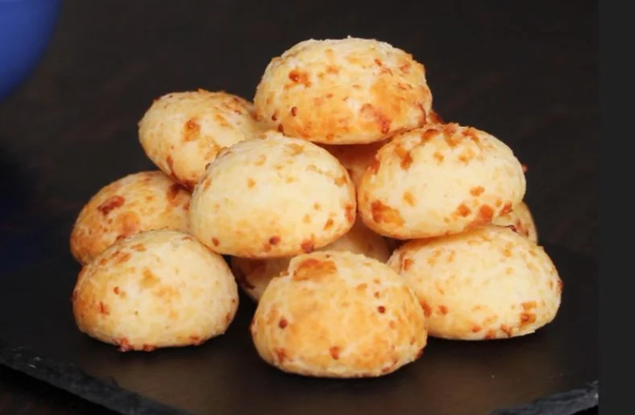

Pão de Queijo

Pão de queijo is a little cheese bread from Minas Gerais. It is crispy on
the outside, chewy on the inside, and it is gluten free because it is
made with tapioca starch.
Ingredients
- 2 cups sour tapioca starch (polvilho azedo)
- 1 cup milk
- 1/2 cup vegetable oil
- 1 teaspoon salt
- 2 eggs
- 1 1/2 cups grated cheese (Minas cheese or parmesan)
Steps
- Preheat the oven to 200°C (400°F).
- Heat the milk, oil and salt in a pan until it starts to boil.
- Pour the hot mixture over the tapioca starch and stir until it is mixed. Let it cool for a few minutes.
- Add the eggs one at a time, mixing well after each one.
- Add the cheese and knead until you get a soft dough.
- Roll the dough into small balls and place them on a baking tray.
- Bake for about 25 minutes, until they are puffed and golden.
Makes about 20 pieces. Eat them warm.
Back to all recipes